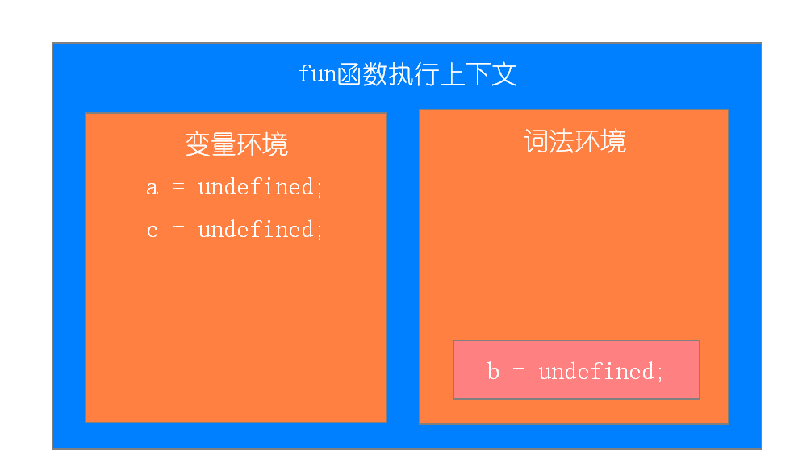
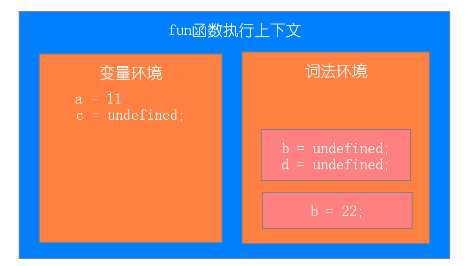
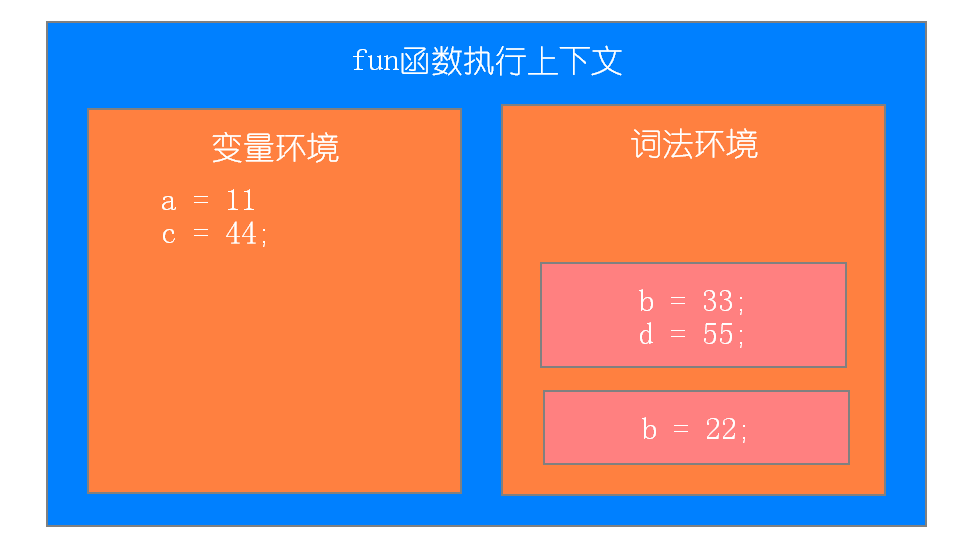
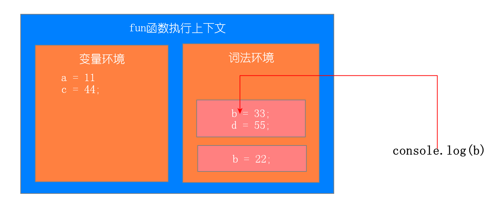
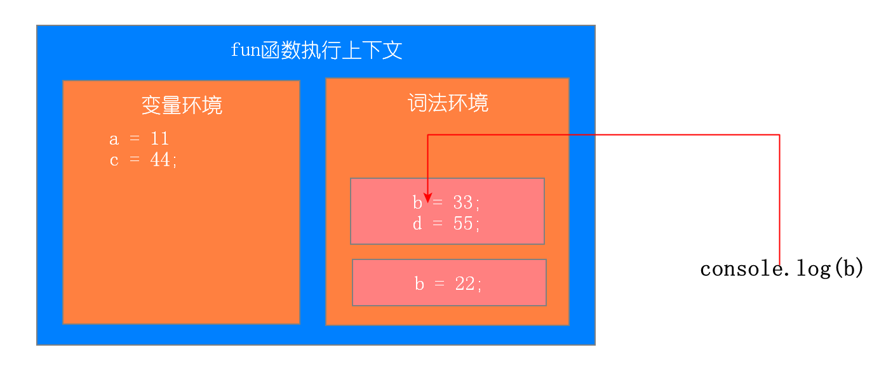
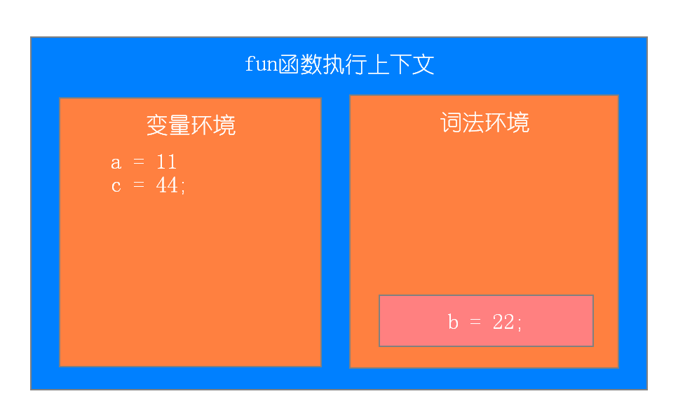
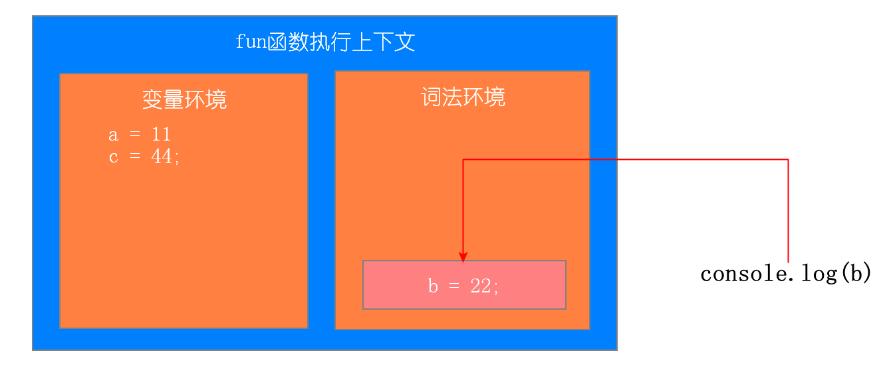
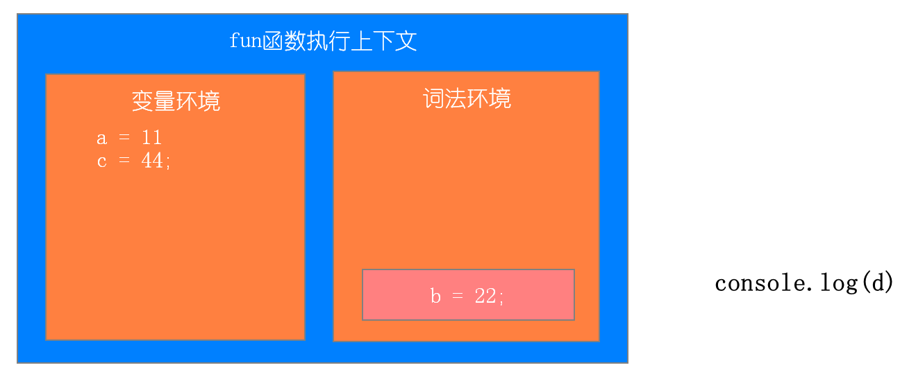
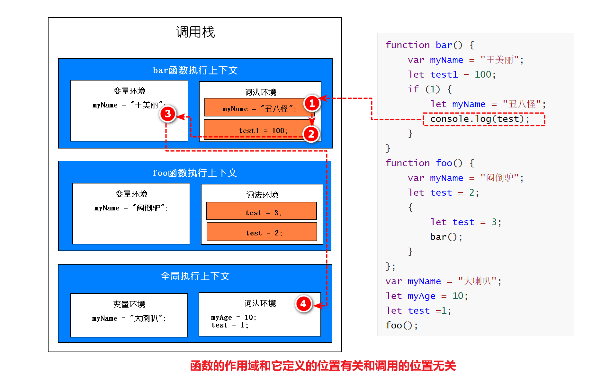
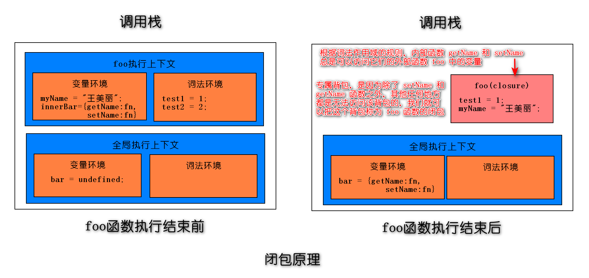

作用域链和闭包
1. 作用域
作用域是指在程序中定义变量的区域，该位置决定了变量的生命周期。通俗地理解，作用域就是变量与函数的可访问范围，即作用域控制着变量和函数的可见性和生命周期。
在 ES6 之前，ES 的作用域只有两种：全局作用域和函数作用域。
全局作用域中的对象在代码中的任何地方都能访问，其生命周期伴随着页面的生命周期。
函数作用域就是在函数内部定义的变量或者函数，并且定义的变量或者函数只能在函数内部被访问。函数执行结束之后，函数内部定义的变量会被销毁。
ES6支持块级作用域
块级作用域特点：在代码块内部定义的变量在代码块外部是访问不到的，并且等该代码块中的代码执行完成之后，代码块中定义的变量会被销毁。
块级作用域形式：就是使用一对大括号包裹的一段代码，比如函数、判断语句、循环语句，甚至单独的一个{}都可以被看作是一个块级作用域。
1
2
3
4
5
6
7
8
9
10//if块
if(1){}
//while块
while(1){}
//函数块
function foo(){}
//for循环块
for(let i = 0; i<100; i++){}
//单独一个块
{}ES6中如何使块级作用域生效：使用let和const关键字
1
2
3for(var i = 0; i<100; i++){
}
console.log(i)1
2
3for(let i = 0; i<100; i++){
}
console.log(i)引申考题：隔一秒钟打印出来一个自然数，自然数递增
1
2
3
4
5for(let i = 0; i<10; i++){
setTimeout(function(){
console.log(i)
},1000*i)
}1
2
3
4
5for(var i = 0; i<10; i++){
setTimeout(function(){
console.log(i)
},1000*i)
}
let、const关键字解决var关键字变量提升的问题
由于变量提升，变量值容易被覆盖
1
2
3
4
5
6
7
8var myname = "王美丽"
function showName(){
console.log(myname);
if(0){
var myname = "闷倒驴" }
console.log(myname);
}
showName()本该销毁的变量销毁不掉
1
2
3for(var i = 0; i<100; i++){
}
console.log(i)
let、const关键字解决问题的原理
let和const关键字创建的变量存储在词法环境中，var关键字创建的变量存储在变量环境中
块级内部代码执行结束，立马销毁内部let、const创建的变量
let和const创建的变量，初始化不提升，创建提升，所以造成暂时性死区
访问变量先在当前执行上下文的词法环境中查找，再到变量环境中查找
1
2
3
4
5
6
7
8
9
10
11
12
13
14
15function fun(){
var a = 11;
let b = 22;
{
let b = 33;
var c = 44;
let d = 55;
console.log(a);
console.log(b);
}
console.log(b);
console.log(c);
console.log(d);
}
fun()第一步：刚开始执行fun函数
第二步：执行内部代码块
 第三步：执行代码块中console.log(a) console.log(b)
 

第四步：代码块执行结束，相应词法环境中的变量弹出

第五步：执行console.log(b);console.log(c);

第六步：执行console.log(d),找不到报错
关于变量提升问题
- var的创建和初始化被提升，赋值不会被提升。
- let的创建被提升，初始化和赋值不会被提升，所以会造成暂时性死区（就是访问不到）。
- function的创建、初始化和赋值均会被提升。
作用域的特点：是代码编译阶段就决定好的，和函数是怎么调用的没有关系。
1 | function bar() { |

2. 作用域链
作用域链：当一个函数中使用了某个变量，首先会在自己内部作用域查找，然后再向外部一层一层查找，直到全局作用域，这个链式查找就是作用域链
1 | let num = 1; |
3.闭包
3.1 什么是闭包
1 | function foo() { |

3.2 闭包形成的原理
- 作用域链，当前作用域可以访问上级作用域中的变量
- 全局变量只用页面关闭才会销毁
3.3 闭包解决的问题
- 函数作用域中的变量在函数执行结束就会销毁，但是有时候我们并不希望变量销毁
- 在函数外部可以访问函数内部的变量
3.4 闭包带来的问题
容易造成内存泄露
内存泄漏：占用的内存没有及时释放，内存泄露积累多了就容易导致内存溢出
闭包
1
2
3
4
5
6
7
8
9function fn1() {
var a = 4
function fn2() {
console.log(++a)
}
return fn2
}
var f = fn1()
f()
3.5 闭包的应用
模仿块级作用域
1
2
3
4
5
6
7for(var i = 0; i < 5; i++) {
(function(j){
setTimeout(() => {
console.log(j);
}, j * 1000);
})(i)
}1
2
3
4
5
6
7for (var i = 0; i < lis.length; i++) {
(function (j) {
lis[j].onclick = function () {
alert(j)
}
})(i)
}埋点计数器
1
2
3
4
5
6
7
8function count () {
var num = 0;
return function(){
num++;
return num;
}
}
var num = count();柯里化
1
2
3
4
5
6
7
8
9
10
11function curryingCheck(reg) {
return function (txt) {
return reg.test(txt)
}
}
var isPhone = curryingCheck(/^(13[0-9]|14[5|7]|15[0|1|2|3|4|5|6|7|8|9]|18[0|1|2|3|5|6|7|8|9])\d{8}$/)
console.log(isPhone('15810606459')) // true
var isEmail = curryingCheck(/^\w+([-+.]\w+)*@\w+([-.]\w+)*\.\w+([-.]\w+)*$/)
console.log(isEmail('wyn@nowcoder.com')) // false